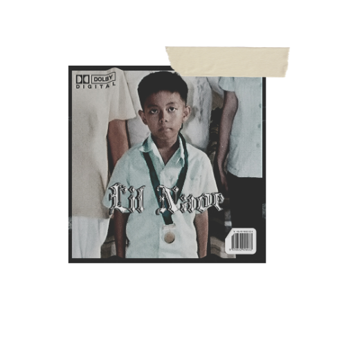
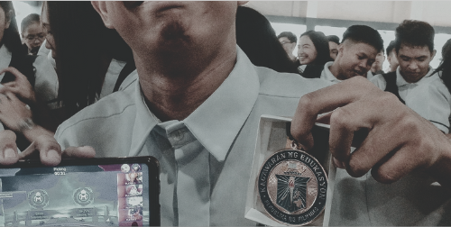
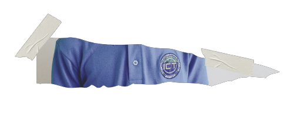
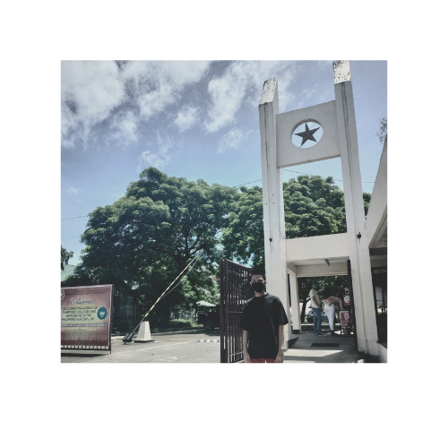
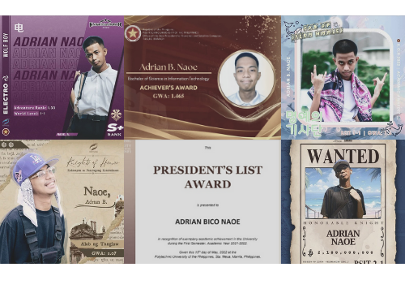
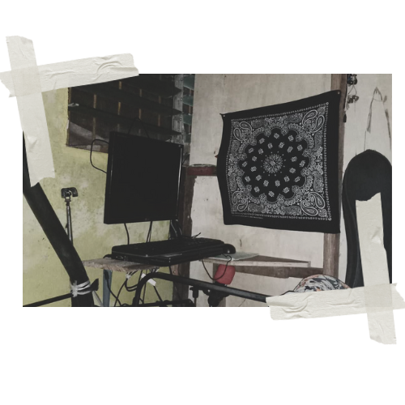
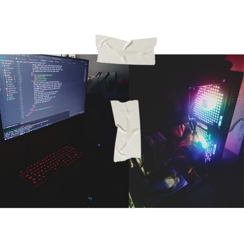

"My Journey from Struggle to Butterfly Success"
Date: Dec 22, 2023
In that photo, I see a version of myself – a carefree kindergarten kid, wrapped in innocence, finding joy in toys and the morning adventures of Doraemon.
Looking back, life seemed so easy then, a time when the world was small and worries were nonexistent. Oh, how I long to revisit those uncomplicated days.
If only I could turn back time and embrace the simplicity of that moment, where the only agenda was play and the only concern was catching the next episode of Doraemon. Life was a melody of laughter and curiosity, a tune I'd love to replay.
Back in my elementary days, I was just an average student, pulling consistent sevens – 76, 77, 78, with the occasional 79 as my peak. Mom never pressured me for top grades; she just reminded me to finish my studies. Despite not excelling, I loved participating in class. Confidence fueled me, and I brought an energetic vibe to those school days. Surprisingly, honors kept rolling in each year. I can't quite explain it; I just went to school, did my best, and somehow managed to thrive.
High school brought unexpected turns. I transformed into a consistent honor student, navigating the higher sections year after year. The shift surprised me, but I embraced the challenge and found my place among the achievers.
Stepping into senior high school brought its own set of pressures. My brother excelled in STEM at MNHS-MAIN, particularly in math and science. I felt the weight of comparison, but I knew my strengths lay in words, not numbers. STEM wasn't my forte, so I opted for the ICT track in grade 10 to align with my skills and interests.
Enrolling in the ICT track, I told myself, "Overall Top 10 or nothing." Seemed crazy considering our campus had around 3,000 students plus. Grade 11 hits hard, and coding tripped me up. No natural knack, but YouTube became my teacher. Stumbled, learned, practiced – each struggle a step towards that Overall Top 10 goal.
Pandemic struck in my grade 12, but it didn't break my stride. No fancy gear, just an old laptop on an HDD, but I believed in my younger self. Day by day, I pushed through, delving into programming and other subjects. Self-discipline became my rhythm, ensuring timely outputs.Graduation day arrived, and I felt blessed. Surprisingly, I achieved my goal, securing the 8th spot in the overall top 10 of the non-academic strand, standing firm among 3,000 students.
College decisions hit, PLMUN and PUP on the table. Expected a win at PLMUN, but the exam said otherwise. Classmates securing slots, anxiety building. PUP-T's announcement dragged, hope slipping away, overthinking took its place. In the midst of doubt, prayers went up for the college journey. God came through, placing me in PUP-T. Another dream, against the odds, turned reality.
Fast forward, PUP-T became my reality. Learning the ropes from friends and professors, it's a school that molds you beyond textbooks. Life lessons: resourcefulness and responsibility, the core curriculum. Being a PUPian isn't easy. Daily journeys from Muntinlupa to Taguig, a grind that leaves you tired. Exam days hit hard; it's like standing tall in a boxing ring until round 12, dodging every punch to find the right answers.
There were moments I wanted to throw in the towel, feeling like a coding failure. I even scored a solid zero on a final programming exam back then. Doubts flooded in, contemplating a change of course. But, thanks to God's reminders, I found solace in Him. He guides my paths, secures my future. Sure, self-doubt crept in, but in those moments, I hit the resources hard. Not the smartest, but a relentless hard worker. In the past years, PUP awards came my way, a harvest from the seeds I sowed. Grateful for every bit of it.
Folks might assume I'm cruising through online classes and crafting quality work with top-notch gear. The truth? I'm making do with my nephew's ancient laptop. I patched up its operating system, but it's painfully slow, running on an HDD. When the heat kicks in, it shuts down spontaneously. Many moments, I've considered giving up, surrendering to the challenges. In the world of IT, there's this notion that having high-end equipment is the key. Yet, I've learned that it's not just about the tools. It's the consistent grind, coupled with patience, that truly paves the way to reaching your goals.
In this snapshot of my new workspace, I see the evidence of progress, a testament that even the smallest steps lead to incredible journeys. My heart swells with joy, for now, I can code comfortably, editing media on big screen. It's not just a setup; it's a blessing—an affirmation that every stride forward is a step towards greatness.